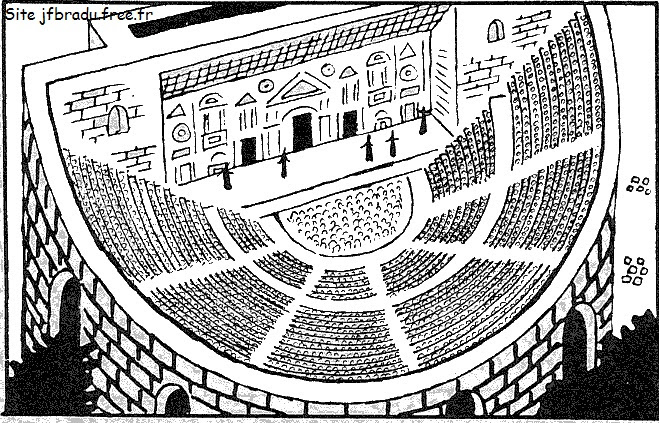

THEATRE GREC OU ROMAIN ?

Ce théâtre est-il grec ou romain ?
Réponse détaillée : C’est ici un magnifique exemple de théâtre grec, reconnaissable notamment au fait que l’orchestra est ronde.

Ce théâtre est-il grec ou romain ?
Réponse détaillée : Cette image montre un théâtre romain ! Pour le reconnaître, regarde l’orchestra, qui est en demi-cercle. En plus, le mur derrière les acteurs est bien plus imposant, et leur permettait de l’utiliser pour y accrocher les décors de la pièce.

Ce théâtre est-il grec ou romain ?
Réponse détaillée : Ce théâtre est construit contre une colline et l’orchestra est ronde, ce qui est typique des théâtres grecs. En plus, vous pouvez voir les restes du mur derrière la scène, bien plus petit que pour un théâtre romain.

Ce théâtre est-il grec ou romain ?
Réponse détaillée : Ce théâtre (construit en Suisse d’ailleurs, à Avenches) est romain. Il ne s’adosse pas du tout à une colline, mais est entièrement maçonné. C’est impressionnant, non ?

Ce théâtre est-il grec ou romain ?
Réponse détaillée : Ici, vous pouvez observer un schéma qui vous montre tous les éléments distinctifs du théâtre grec, vous les reconnaissez ? Il est adossé à une colline, l’orchestra est ronde, et il y a un petit mur derrière la scène pour accrocher des décors simples.

Ce théâtre est-il grec ou romain ?
Réponse détaillée : Ici, ce sont tous les éléments distinctifs du théâtre romain qui sont représentés, voua les reconnaissez ? Il est entièrement maçonné de tous les côtés, l’orchestra est en demi-cercle, et derrière les acteurs il y a un grand mur de scène qui leur permet d’accrocher les décors.